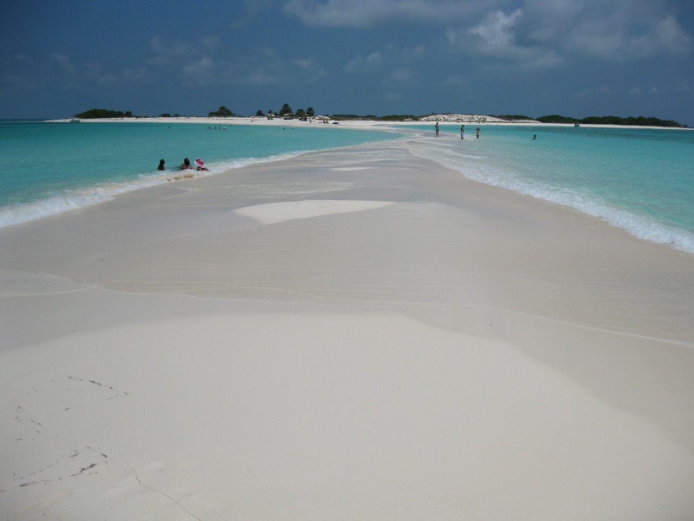
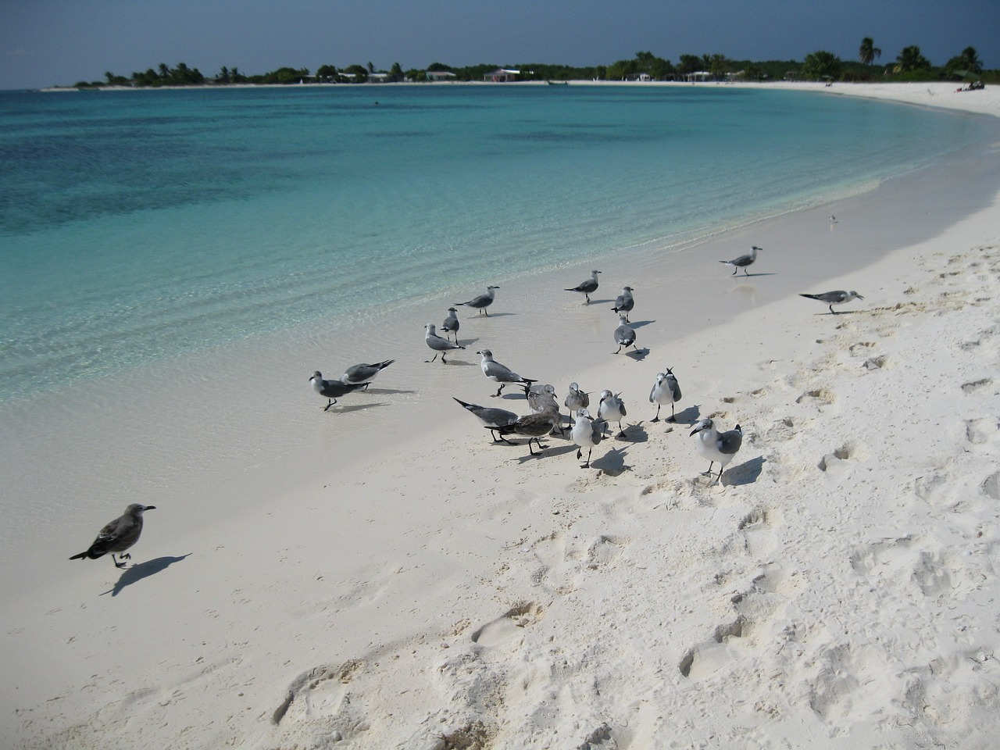
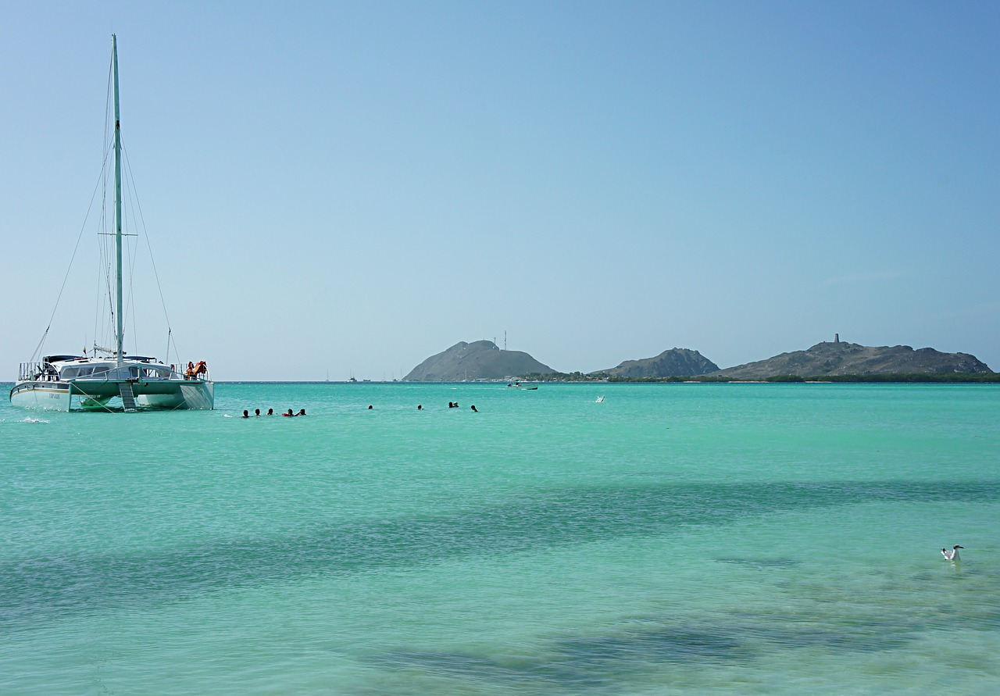
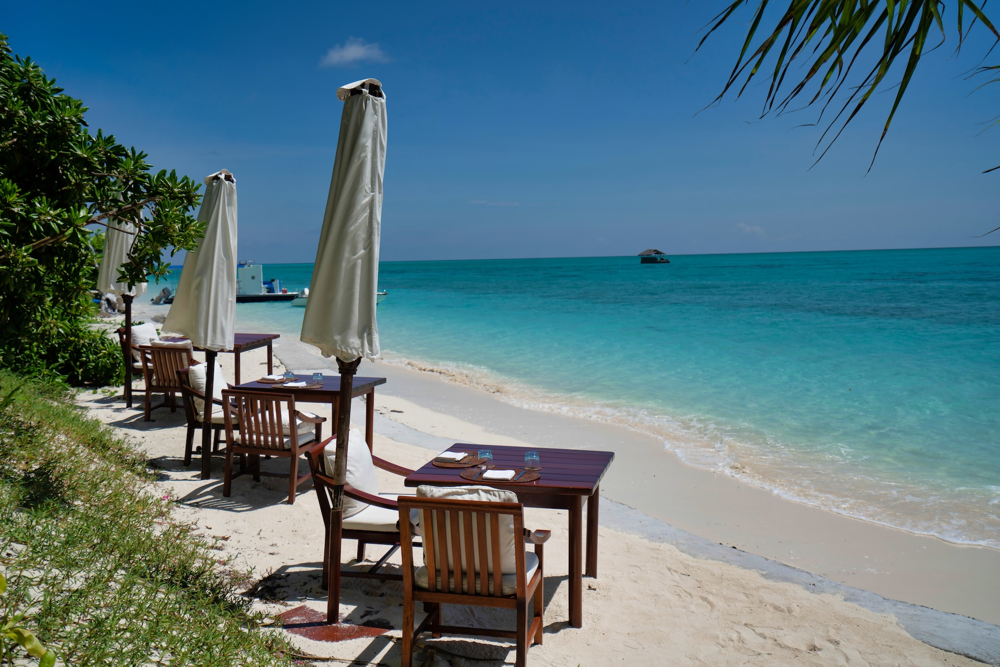
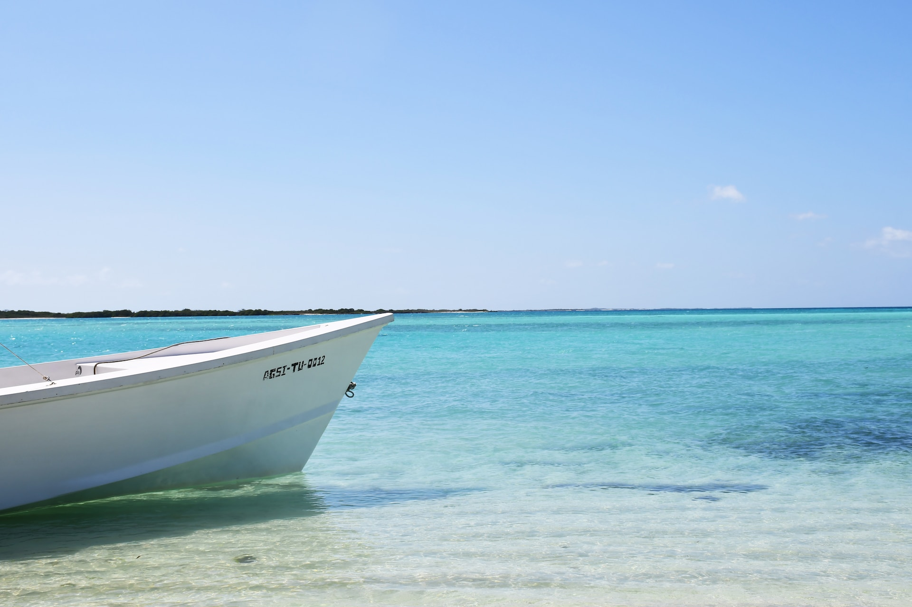
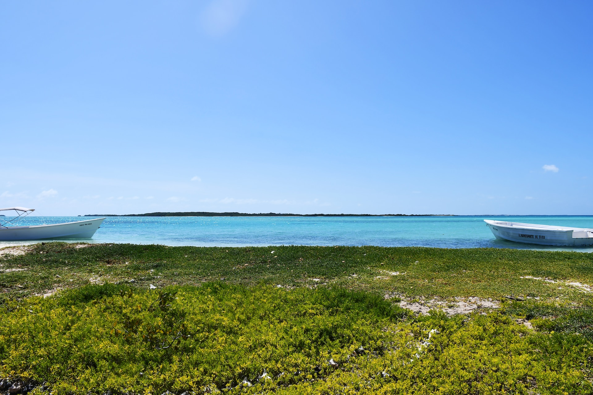
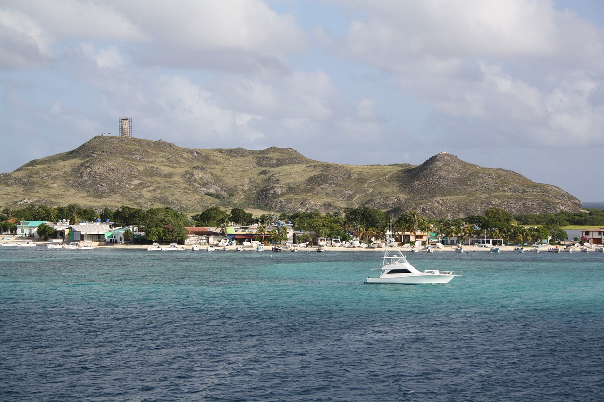

Playas Paradisíacas
El archipiélago es conocido por sus playas de arena blanca y aguas turquesas. La Playa Cayo de Agua es una de las más famosas y ofrece un paisaje impresionante.
Los Roques es un parque nacional marino, lo que significa que la conservación de su entorno natural es una prioridad. Sus aguas cristalinas y su biodiversidad marina lo convierten en un lugar excepcional para la práctica del buceo y el esnórquel.
Los Roques es un paraíso para los amantes de los deportes acuáticos, como el kitesurf, el windsurf, la pesca y la navegación. Sus condiciones de viento y su gran laguna hacen que sea un lugar ideal para estas actividades.
La gastronomía local en Los Roques se centra en los productos del mar. Los pescados y mariscos frescos son la base de muchos platos. Las arepas rellenas y los platos a base de langosta son populares.
El archipiélago es hogar de una rica variedad de vida marina, incluyendo tortugas, delfines y una amplia gama de peces tropicales. También es un importante sitio de anidación para aves marinas.
La protección del entorno natural es fundamental en Los Roques. Se han implementado medidas para limitar el impacto ambiental del turismo y preservar la belleza del archipiélago.
En las islas, encontrarás posadas y pequeños hoteles que ofrecen alojamiento para los visitantes. La atmósfera es relajada y acogedora.
Los Roques es un destino popular para aquellos que buscan disfrutar de la belleza natural del Caribe, relajarse en playas prístinas y participar en emocionantes actividades acuáticas. Es un lugar mágico para los amantes de la naturaleza y los deportes acuáticos.